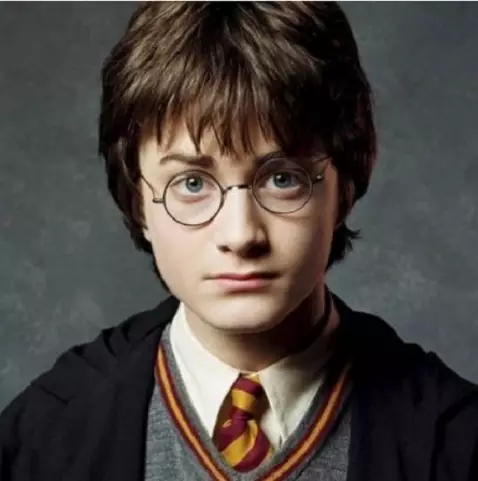

A Grifinória, fundada por Godrico Gryffindor, é uma das quatro casas da Escola de Magia e Bruxaria de Hogwarts. Ao estabelecê-la, Godrico instruiu o Chapéu Seletor a classificar estudantes que obtivessem características as quais ele mais valorizava, como a coragem, o cavalheirismo e a determinação. Suas cores são o escarlate e o ouro e seu animal emblemático é um leão. Sir Nicholas de Mimsy-Porpington, também conhecido como "Nick Quase Sem Cabeça" é o fantasma patrono da casa. A casa corresponde aproximadamente ao elemento fogo, e é por esta razão, que suas cores foram escolhidas; elas também podem corresponder a um leão; com o escarlate representando sua crina e cauda e o ouro simbolizando sua pelagem.
Principais Bruxos:
HARRY POTTER:
Harry Potter, como membro da Grifinória, destacou-se em vários feitos notáveis ao longo de sua jornada em Hogwarts. Desde o seu primeiro ano, ele demonstrou coragem e bravura, enfrentando desafios que muitos não teriam coragem de encarar. Um dos primeiros grandes feitos foi sua participação no Torneio Tribruxo, onde, mesmo sendo um competidor inesperado, mostrou habilidade e determinação ao enfrentar dragões e resgatar seus amigos na prova do Lago Negro. Sua coragem foi evidenciada mais uma vez ao enfrentar Voldemort na final do torneio, provando que estava disposto a arriscar sua vida pelo bem dos outros. Além disso, Harry liderou a D.A. (Armada de Dumbledore), um grupo secreto que treinava estudantes para se defenderem contra as artes das trevas, inspirando seus colegas a se unirem e lutarem contra a opressão. Ele também foi um membro crucial na batalha de Hogwarts, onde sua bravura e lealdade foram fundamentais para a derrota de Voldemort e seus seguidores. Harry exemplifica os valores da Grifinória: coragem, determinação e lealdade, sempre pronto para proteger aqueles que ama e lutar pelo que é certo.
Hermione Granger, membro da Grifinória, é conhecida por sua inteligência e determinação. Desde seu primeiro ano em Hogwarts, destacou-se como uma aluna exemplar e utilizou o Vira-Tempo para maximizar seus estudos. Foi uma líder na D.A. (Armada de Dumbledore), ensinando feitiços de defesa a seus colegas, e lutou bravamente na Batalha de Hogwarts. Seu papel na decifração do enigma da Pedra Filosofal e na busca dos Horcruxes também foi crucial. Hermione representa a coragem e a lealdade da Grifinória, usando seu conhecimento para proteger amigos e lutar por justiça.
Albus Dumbledore, embora não fosse um estudante da Grifinória, é uma figura central na história da casa e desempenhou um papel crucial em vários feitos significativos. Como diretor de Hogwarts, ele protegeu a escola e seus alunos de inúmeras ameaças, incluindo a ascensão de Voldemort. Dumbledore fundou a Ordem da Fênix, um grupo dedicado a combater as forças das trevas e defender aqueles que não podiam se proteger. Sua sabedoria e poder foram fundamentais para reunir aliados e preparar a comunidade mágica para os desafios que enfrentavam. Ele também foi mentor de Harry Potter e de outros jovens bruxos, guiando-os em suas jornadas e ensinando-os sobre a importância da coragem, amizade e amor. Dumbledore teve um papel vital na busca e destruição dos Horcruxes, sendo uma força inspiradora que uniu a Grifinória e outras casas na luta contra Voldemort. Além disso, seu legado de bravura e integridade continua a influenciar os valores da Grifinória, mostrando que a verdadeira coragem vai além da batalha física, envolvendo também a sabedoria e a compaixão.
CLIQUE NA IMAGEM PARA SABER MAIS SOBRE O FUNDADOR: